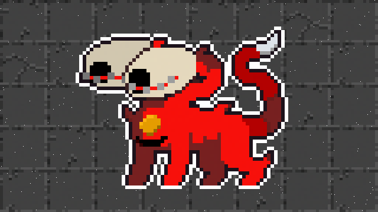

Um mago muito poderoso amaldiçoou o povo de Elmwood a 214 anos anos atras, desde então a besta aterroriza todos os habitantes desse antigo vilarejo.
A anciã da cidade de Elmwood te contratou para derrotar o mal que cerca a cidade a séculos.

Você assumirá o papel de Hoenn, um poderoso e experiente mago que domina o controle da luz. Vestido com uma capa vermelha, ele exala uma aura de mistério e poder enquanto manipula os mais brilhantes feixes de luz para moldar o mundo ao seu redor. Com olhos azuis que brilham com a intensidade das estrelas, Hoenn é um mestre em utilizar sua magia luminosa tanto para iluminar o caminho quanto para deslumbrar e desorientar seus oponentes.

Hoenn conjura uma Esfera Estelar, uma pequena e radiante esfera de luz azulada que emana do seu poderoso cajado, deslizando suavemente pelo ar antes de ser lançada em direção ao alvo. Sua luz cintilante carrega consigo uma energia mágica capaz de iluminar a escuridão e dissipar as sombras que ousam desafiar seu caminho.

Hoenn ao absorver uma quantidade alta de energia
desencadeia o Fulgor da Aurora, um feixe de luz tão
poderoso
que pode partir montanhas e abrir
caminho até
os confins do horizonte. No entanto, essa habilidade
demanda uma imensa quantidade de energia do
protagonista,
deixando-o exausto após o seu uso. A luz intensa desse
feixe é capaz de banir a escuridão e
inspirar esperança
naqueles que testemunham sua magnificência,
mas sua utilização frequente é limitada
devido ao seu
custo elevado de energia e desgaste do usuario.
O unico desenvolvedor por trás do site e do
jogo, é fisiculturista nas horas vagas. Seu
pokemon
favorito é o Swampert, ele
também curte suco de uva integral